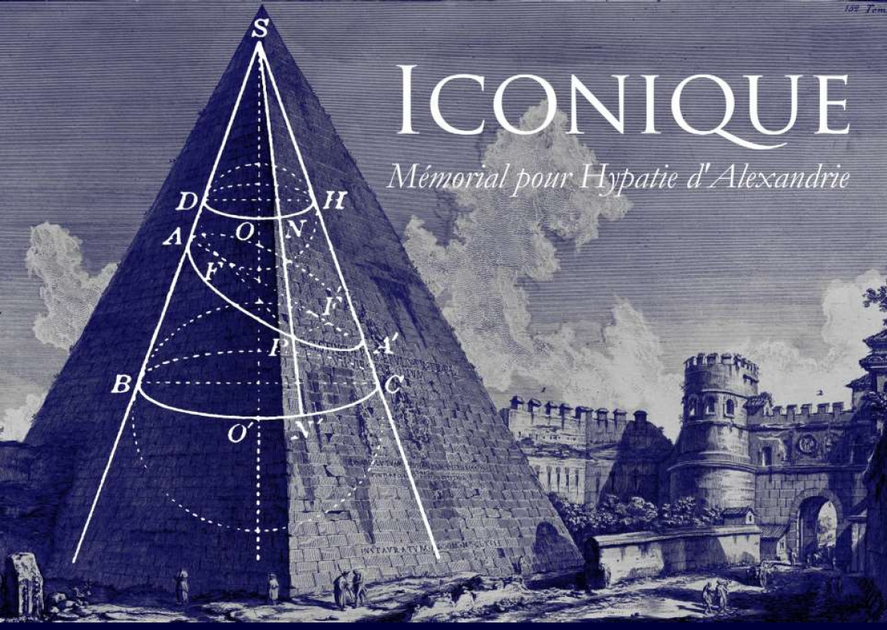
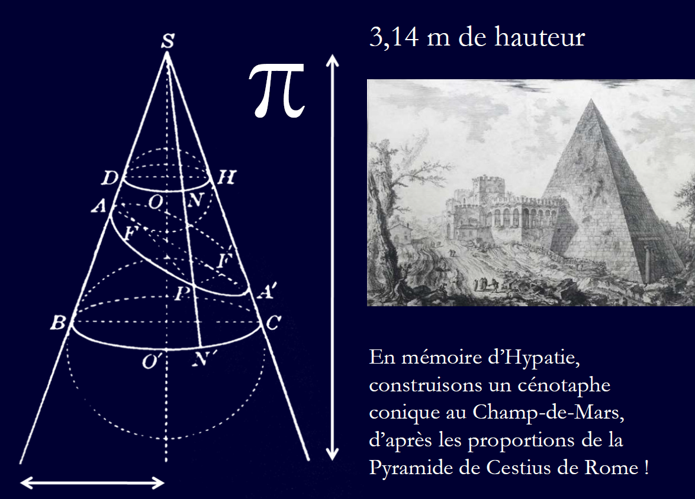
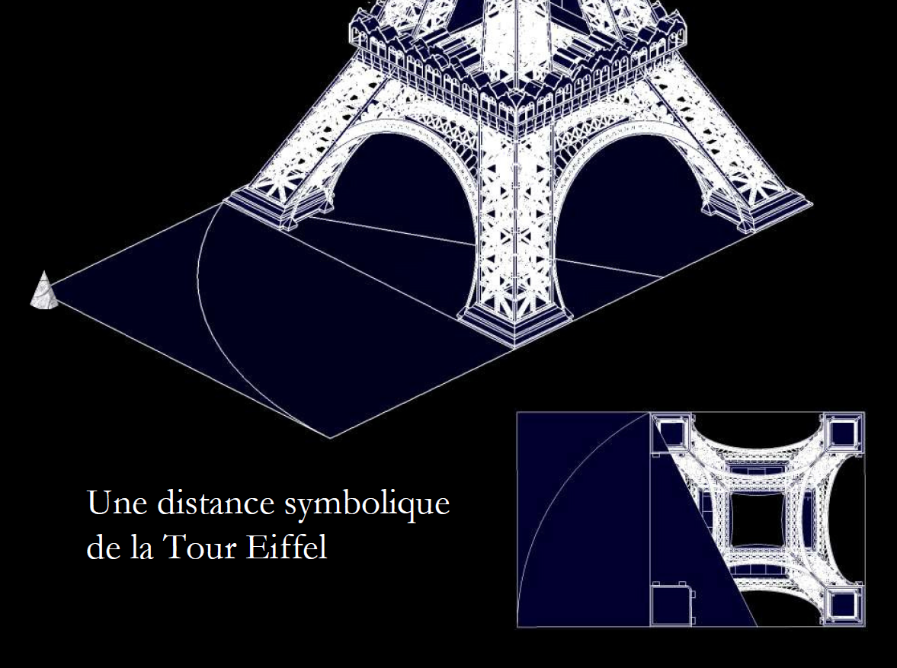
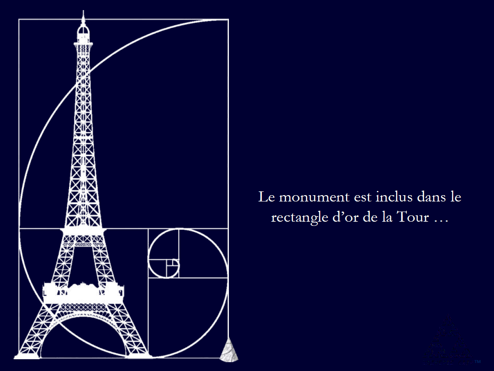

LE MEMORIAL D'HYPATIE - VIIe arrondissement




PHOTOGRAMMETRIE du TRANSEPT de SAINT-SULPICE

Photogrammétrie du transept de l’église Saint-Sulpice, Paris, 2024. Projet réalisé à l’EPSAA. Ce projet propose de mesurer avec les technologies modernes la méridienne de l'église Saint Sulpice, ancien instrument de mesure astronomique. Objet scientifique dans un lieu catholique, il permet d'observer chaque jour à midi vrai la position du Soleil, dont l'image se projette sur la ligne Nord-Sud.